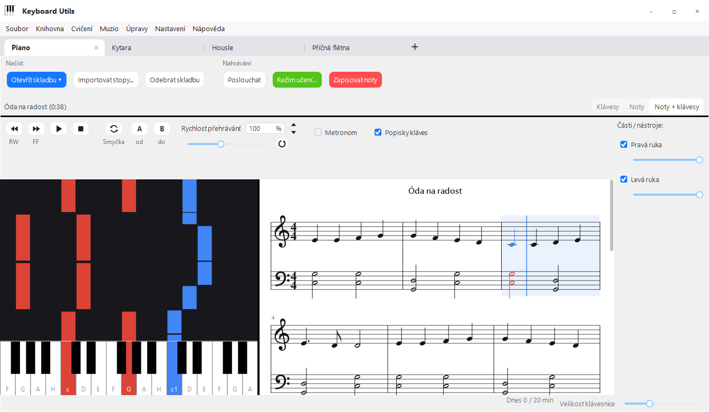

Klaviatura i noty
Padající noty, notový zápis na dvojosnově s předznamenáním, nebo obojí vedle sebe. Klikem na takt skočíš na to místo.
Aplikace pro Windows · zdarma
Keyboard Utils přehraje skladbu jako padající noty i jako notový zápis – na klavír, kytaru, housle, violu,
violoncello, flétny, klarinet, trubku i saxofon.
V režimu učení poslouchá, co hraješ, a ukáže, kde ses trefil a kde zas ne.
Funguje s MIDI klávesami, s mikrofonem u akustického nástroje i jen s myší.
KeyboardUtils.exe, 7 MB · Windows 10 a 11 · vyžaduje .NET 10 Desktop Runtime

Padající noty, notový zápis na dvojosnově s předznamenáním, nebo obojí vedle sebe. Klikem na takt skočíš na to místo.
Skladba počká, než zahraješ správnou notu, nebo jede v tempu. Na konci hodnocení, výsledek z minula a graf pokroku u každé skladby.
Opakuj těžký úsek, zpomal na 25 %, zapni metronom s odpočítáním - nebo jen metronom bez skladby, s taktem a naťukaným tempem.
Zahraj melodii a appka ji zapíše. Poslechneš si ji a uložíš jako MIDI nebo MusicXML pro MuseScore.
MIDI a MusicXML ze souboru nebo ze složky, přes 2000 volných skladeb z Mutopia Project, stopy z FL Studia a převod zvuku na noty.
Kytara a smyčce na hmatníku, flétny, klarinet, saxofon a trubka s hmaty, do kterých padá skladba. Tabulatura, akordy, ladička a skutečný zvuk každého nástroje.
Historie každého pokusu, těžká místa a denní cíl. Zpráva o cvičení za týden či měsíc jako PDF – pošleš ji učiteli nebo vytiskneš.
Klávesové zkratky a ovládání celé appky z druhé (makro) klávesnice, včetně otočného kolečka – ruce zůstanou u piana.
Tlačítkem Stáhnout pro Windows stáhneš KeyboardUtils.exe,
stačí ho pouze spustit. Windows může hlásit, že „ochránil počítač“, klikni na
Další informace a Přesto spustit.
Proč?
Vlastní MIDI nebo MusicXML, nebo si vyhledej volné noty přímo v appce.
Vyber nahoře svůj nástroj, připoj MIDI klávesy nebo nech appku poslouchat mikrofonem a spusť režim učení.

Muzio (Keyboard Hero) je webová aplikace pro žáky ZUŠ Moravský Krumlov: nahráváš cvičení přímo z prohlížeče, sbíráš hvězdy, držíš si cvičební řadu a učitel tvé nahrávky poslouchá a hodnotí. Keyboard Utils je jeho parťák na cvičení u počítače.
Otevřít Muzio